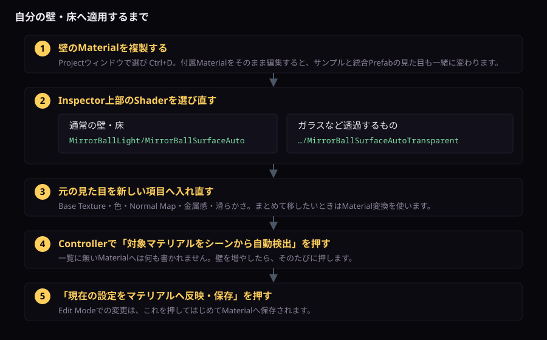

自分の壁・床へ適用する
使うShaderを選び、Materialを割り当てて、Controllerへ登録するまでです。
自分の壁へ適用する
- 対象壁のMaterialを複製します。
- 通常の壁なら
MirrorBallLight/MirrorBallSurfaceAuto、ガラスならMirrorBallLight/MirrorBallSurfaceAutoTransparentへ変更します。 - 元のBase Texture、Color、Normal Mapなどを移します。
- Controllerの「対象マテリアルをシーンから自動検出」を押します。
- 「現在の設定をマテリアルへ反映・保存」を押します。

Shader一覧
| 用途 | Shader名 |
|---|---|
| 通常面 |
MirrorBallLight/MirrorBallSurfaceAuto
|
| 透明面 |
MirrorBallLight/MirrorBallSurfaceAutoTransparent
|
| 通常版本体 |
MirrorBallLight/MirrorBallFacetBody
|
| 連携通常面 |
MirrorBallLight/Integrations/MirrorBallSurfaceAuto (VRCLightVolumes + LTCGI)
|
| 連携透明面 |
MirrorBallLight/Integrations/MirrorBallSurfaceAutoTransparent (VRCLightVolumes + LTCGI)
|
| 連携本体 |
MirrorBallLight/Integrations/MirrorBallFacetBody (VRCLightVolumes + LTCGI)
|
MaterialのInspectorの使い方
MirrorBallLightのSurface Shaderを割り当てたMaterialは、項目が11個の折りたたみに分かれて表示されます。 Unity標準のMaterial表示とは並びが違います。
Shaderを割り当てる
- ProjectウィンドウでMaterialを選びます。1つのMaterialを複数のRendererで共有していると、直した見た目はその全部に反映されます。 片方だけ変えたいなら、先に複製して割り当て直してください。付属Materialをそのまま編集するのも避けてください。 サンプルと統合Prefabの見た目も一緒に変わります。
Ctrl+Dで複製してから使います。 - Inspector上部の Shader のドロップダウンを開きます。
- 通常の壁・床なら
MirrorBallLight/MirrorBallSurfaceAuto、ガラスなど透過するものならMirrorBallLight/MirrorBallSurfaceAutoTransparentを選びます。 - 元のTexture・色・Normal Mapを、新しい項目へ入れ直します。既存Materialからまとめて移したい場合はMaterial変換を使います。
11個の折りたたみ
上にある「すべて開く」「すべて閉じる」でまとめて操作できます。
| 番号 | 中身 |
|---|---|
| 1 | 表面の基本設定（Texture・色・Normal Map・金属感・滑らかさ・Cull Mode） |
| 2 | 表面Emission・AudioLink |
| 3 | ミラーボール反射光 |
| 4 | 反射光のAudioLink |
| 5 | 光点・形状・ランダム点灯 |
| 6 | Material個別マスク・発光パターン |
| 7 | 投影Cookie |
| 8 | 環境・材質への適応 |
| 9 | 透明描画 |
| 10 | VRCLightVolumes・LTCGI |
| 11 | 詳細・描画設定 |
Lighting Engineで実形状へ反射を配置する
壁・床・天井へ球面Facetの反射方向から光点を配置する機能です。既定の受光面Shaderによる描画とは別の経路で、使うときだけ導入します。
- Sceneを保存し、Controllerのミラーボール
mirrorBallと入射Spot LightspotLightを設定します。Spotの向き・角度・範囲がボールへ届くことを確認します。 - Tools → MirrorBall Light → Lighting Engineを導入を開き、Controllerと受光対象の階層を指定します。対象を検出・適用内容を確認を押します。
- 一覧の対象チェックとFloor／Wall／Ceiling／Stage／Objects／Avatar分類を見直します。自動分類は候補なので、ステージなどは手動で訂正します。AvatarはSceneに配置したモデルのみです。実行時に参加するプレイヤーAvatarは登録対象に含めません。鏡・動画スクリーン・テキスト・半透明のMaterialは最初からチェックが外れています（自動で除外される対象）。
- 必要なMeshColliderを追加を選ぶと、足りない対象へ実形状のColliderを追加します。有効な非Trigger Colliderが必要です。共有する親Colliderを異なるグループへ分類すると競合するため、一覧を整理してから一覧の対象へLighting Engineを設定を押します。適用はUndoで戻せます。
- 追加された
MirrorBallLightingEngineのcontroller／receiverManager／ball／incomingSpotを確認します。Setupが作るspotMeshはローカルXY平面・法線+ZのQuad、spotMaterialはMirrorBallLight/InstancedSpotとGPU Instancing有効の組み合わせです。ボールのFacet法線・中心と、登録した対象ごとの受光面の色もSetupで用意します（下記）。シーンにAudioLinkがあればaudioLinkBehaviourへつなぎます（下記）。 raycastLayersにはReceiverだけでなく、反射を止める登録外の柱・家具・壁も含めます。最初に当たったColliderが未登録なら、その方向の光点を出しません。遮蔽物をLayerMaskから外すと光が通り抜けます。maximumRayDistanceとSpot角度も実際の部屋に合わせます。
自動で除外される対象
対象を検出・適用内容を確認を押すと、次のRendererはチェックが外れた状態で一覧に出ます。
| 一覧に出る理由 | 判定 |
|---|---|
| 鏡（VRC Mirror） | 自身か親に VRCMirrorReflection がある |
| 動画スクリーン（VideoPlayer・VRC動画プレイヤー） | 自身・親・子に VideoPlayer かVRChatの動画プレイヤーがある、または VRCAVProVideoScreen がある |
| テキスト（TextMesh・TextMeshPro） | TextMesh か TextMeshPro がある |
| 半透明・加算のMaterial（Render Queue 3000以上） | 1つ目のMaterialのRender Queueが3000以上 |
除外された行の下には「自動除外：鏡（VRC Mirror）。受光させる場合はチェックを入れてください。」のように理由が出ます。チェックを入れれば登録できます。チェックの外れた対象は登録しません。必要なMeshColliderを追加がONでもColliderを追加しません。
パーティクル・ラインなど、メッシュ以外のRendererは一覧に出しません。ボール本体とその子も一覧に出しません。
除外の件数は、検出時と適用後の結果欄に理由ごとに出ます。表示例です。
「3個のRendererを登録対象にしました。分類と除外対象を確認してから適用できます。
除外 鏡（VRC Mirror）：1個
除外 テキスト（TextMesh・TextMeshPro）：2個
除外 パーティクル・ライン等のメッシュ以外のRenderer：4個（一覧に表示しません）」
自分でチェックを外した対象は「除外 手動で除外：1個」のように数えます。適用後の結果欄では「登録完了。MeshCollider追加 …」の後に同じ行が出ます。
ボールのFacet選別
Setupはボールのメッシュへ球を当てはめ、その球面上にある外向きの三角形だけを反射Facetとして焼き込みます。同じメッシュに入った鎖や吊り金具の三角形はFacetにしません。面積0の三角形も除外します。主に球でない形状は、すべての三角形をFacetにします。
Facetの上限は8192個です。超える場合は球面全体から均等に間引きます。結果欄には反射Facet数・ボールMeshの三角形数・除外数が出ます。表示例です。
「反射Facet 8192個を登録。ボールMeshの三角形 17156個のうち、鎖など球面から外れた三角形・面積0の三角形 508個を除外しました。上限8192個まで均等に間引いています。」
最後の「上限8192個まで均等に間引いています。」は間引いたときだけ出ます。ボールにMeshがない場合は「ボールのMesh（三角形）がないため、実行時に球面のFacetを自動生成します。」と出ます。
受光面の色
Engineの光点は、当たった面のMaterialの色を掛けて描きます。暗いMaterialでは光点が暗くなり、色の付いたMaterialでは光点にその色が付きます。白いMaterialでは光点の色は変わりません。シーンのライティングには左右されません。
色は一覧の対象へLighting Engineを設定を押したときに、登録するRendererごとに記録します。記録するのは、1つ目のMaterialの _Color と、メッシュが実際に使うUV範囲のメインテクスチャの平均を掛けた色です。_Color が無いShaderは白として扱います。2つ目以降のMaterialは使いません。テクスチャやメッシュのRead/WriteがOFFでも測れます。Materialやテクスチャを変えたら、もう一度押して記録し直します。
テクスチャはGPUで読むため、グラフィックスありのEditorが必要です。読めない環境では何も変更せずに止まり、「受光面の色を測れません：GPUでのテクスチャ読み出し（RGBA Half の ReadPixels）が使えません。グラフィックスありのEditorで実行してください。」と出ます。
効き具合はEngine Inspectorの受光面の色の影響（receiverColorInfluence、0〜1、既定1）で決めます。1で面の色をそのまま掛け、0では面の色を使わない白い光点になります。用途別プリセットと演出Assetはこの値を変えません。
色を記録していない登録対象があると、Engine Inspectorに次の警告が出ます。色の記録が入る前に導入したシーンでも出ます。その対象の光点は白で描かれます。
「受光面の色が未登録の対象があります（白で表示されます）。受光対象の登録を開き、「一覧の対象へLighting Engineを設定」をもう一度実行してください。」
光点の形状
Engineの光点は、Controllerの光点の形状で描きます。内蔵の形状（四角・丸・ひし形・十字・六角形・星・リング・ハート）、光点形状テクスチャ、複数形状アトラスを使用のどれも、受光面Shaderの光点と同じように使えます。アトラスでは光点ごとに形状が決まり、その光点が消えるまで変わりません。Controllerの形状を変えると、実行中のEngineの光点も変わります。
光点の形状の既定は「四角」なので、Engineの光点も既定では四角です。丸い光点にするには、Controllerで「丸」を選び、複数形状アトラスを使用をOFFにします。受光面Shaderの光点も同じ形になります。形状が「丸」以外か、アトラスを使っているときは、Engine Inspectorに次の案内が出ます。
「反射光点はControllerの「光点の形状」（形状テクスチャ・複数形状アトラス・光点アンチエイリアスを含む）で描かれます。以前のLighting Engineは常に丸でした。以前の丸い光点に戻すには、Controllerの「光点の形状」を「丸」にし、「複数形状アトラスを使用」をOFFにしてください（Controllerの受光面の光点も同じ形になります）。」
Controllerの光点アンチエイリアスは、Engineの内蔵形状では輪郭をぼかす幅として効きます。0で約1画素、1で約2画素です。形状テクスチャとアトラスの輪郭はテクスチャのままです。内蔵形状には、Engineの spotSoftness による内側のぼかしも掛かります。
Engineの光点は面に沿った一定の大きさで描くため、斜めの面でも引き伸ばされません。受光面Shaderの光点は、斜めの面では伸びて見えます。
AudioLinkの自動接続
Setupは、programの名前が「AudioLink」のUdonBehaviourをシーンから探し、Engineの audioLinkBehaviour へ設定して requestAudioLinkReadback を有効にします。すでに audioLinkBehaviour を設定している場合は変更しません。見つからない場合は何も設定しません。あとからAudioLinkを置いたときは、もう一度一覧の対象へLighting Engineを設定を押すか、手で設定してください。詳しくはEngineの帯域反応を参照してください。
Receiver Managerの receiveFloor／receiveWalls／receiveCeiling／receiveStage／receiveObjects／receiveAvatars でグループを選び、各 *Intensity で強さを調整します。Avatarは既定で無効です。登録はEditorで焼き込み、実行中のScene全体の自動探索や既存Materialの置換は行いません。階層・Colliderを変えたら一覧から再登録してください。
engineEnabled を有効にすると別描画の反射を使い、受光面Shader側の反射と重ねて二重に表示しないようControllerへ通知します。回転設定・品質は回転と負荷調整を参照してください。